内容审核
内容审核功能在站点内起到防止灌水，净化站点内容的作用，内容审核包括论坛审核项目、家园审核项目以及门户审核项目。可谓是全方面的涵盖了所有和内容有关的审核，可以大大减少垃圾内容以及广告内容的产生几率。管理者维护站点更加方便、快捷。
一、论坛主题/回复审核功能的开启
对于论坛的特定版块，管理者可能不希望会员发表的主题或回复直接显示出来，而是必须通过管理者的审核后，这些主题或者回复才能显示。Discuz! 提供了审核帖子的功能，使得管理者有效控制用户所发表的信息，最大程度地避免违规内容的出现。下面详细介绍该功能的应用。
开启审核功能需要在后台设置两处，下面依次介绍：
1、开启论坛相应版块的审核功能
操作路径：【后台】=>【论坛】=>【版块管理】=> 编辑指定版块，然后点击“帖子选项”，开启指定版块的审核功能，如下图所示：
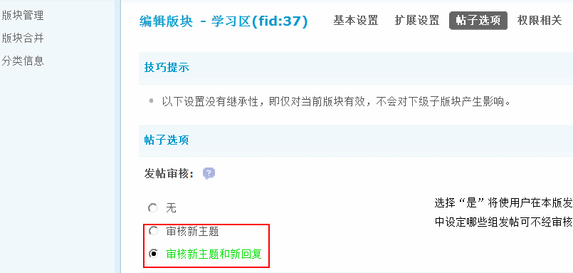发帖审核：选择“审核新主题”或者“审核新主题和新回复”将使用户在本版发表的帖子待版主或管理员审查通过后才显示出来，打开此功能后，您可以在用户组中设定哪些组发帖可不经审核，也可以在管理组中设定哪些组可以审核别人的帖子。
2、设置论坛中发帖需要审核的用户组
管理员进入论坛【后台】=>【用户】=>【用户组】=> 点击指定用户组后的“编辑”，如下图所示：
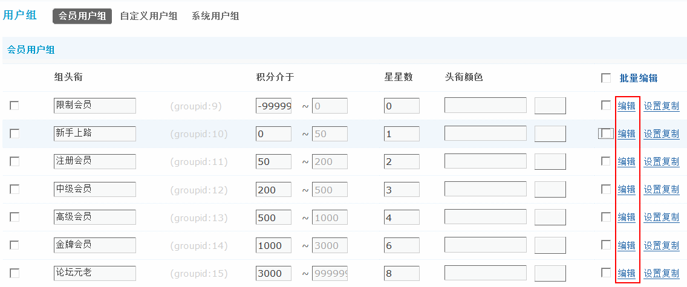点击“编辑”后，进入用户组权限编辑界面，然后点击【论坛相关】=>【帖子相关】，设置“允许直接发帖”，如下图所示：
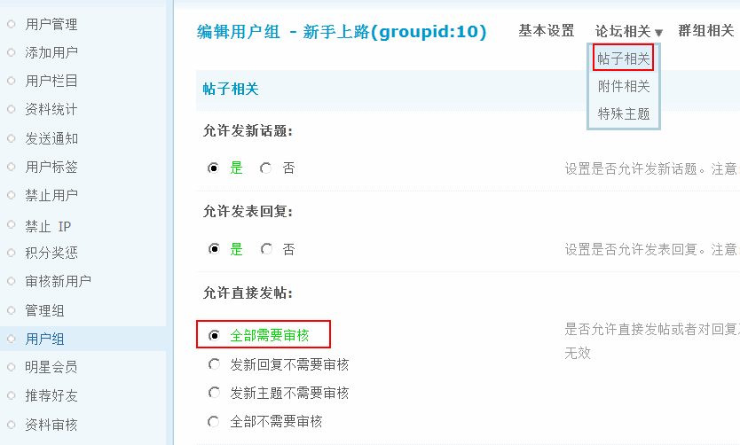允许直接发帖：是否允许直接发帖或者对回复及主题进行审核，此设置受版块审核影响，如果版块设置为不需要审核，则此设置无效。同时此设置影响词语过滤功能，只有设置为允许审核，词语过滤设置才有效。
3、设置具有审核权限的管理组
管理员进入站点【后台】=>【用户】=>【管理组】=> 点击指定管理组后的“管理权限” ，进入管理组权限设置界面的“管理面板权限”，如下图所示：
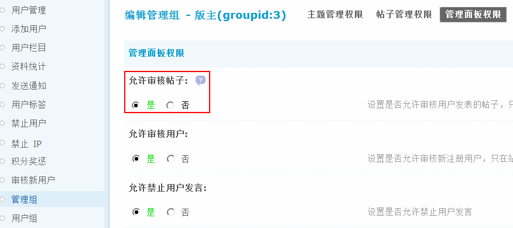允许审核帖子：设置是否允许审核用户发表的帖子，只在论坛设置需要审核时有效。选择“是”，版主就可以在论坛相关版块 => 管理面板 => 审核，进行审核操作了。如下图所示：
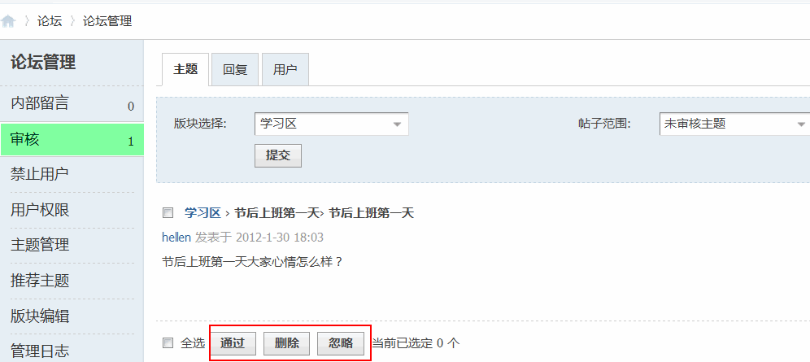版主只能审核本版内的新帖，超级版主以及管理员可以审核全部需要审核的新帖。完成上述三步操作后，发帖审核的相关权限就全部开启了。
二、审核帖子功能的使用
开启帖子审核功能后，会员在发表新帖后，出现提示信息，如下图所示：
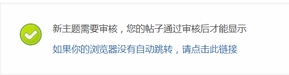访问该版时会有如下提示：
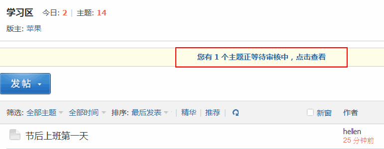具有发帖审核权限的超级版主或者版主，进入“管理面板”，即可实现对新发帖子的审核，如下图所示：
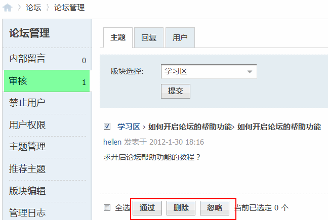同样，管理员也可以登录后台进行帖子审核。
操作路径：【后台】=>【内容】=>【内容审核】
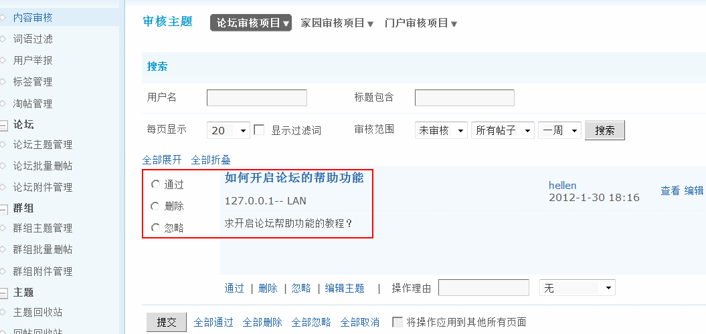1、审核范围：有未审核和已忽略两个选项
已忽略：可以搜索出以前忽略的帖子来重新进行审核。
未审核：显示所有未审核主题。
2、批量操作：可以点击下面的全部通过，全部删除，全部忽略，全部取消进行新主题的批量操作。也可以点击每个需要审核的主题左边的单选框进行单个审核。
3、编辑主题：点击需要审核主题右侧的“编辑”或者主题下方的“编辑主题”链接可以对主题进行编辑，编辑后还可以输入编辑的理由。
三、家园审核项目的开启
管理员进入站点【后台】=>【用户】=>【用户组】=> 点击指定用户组后的“编辑”，也可以选择多个用户组点击“批量编辑”后进入用户组权限编辑界面，然后点击【空间相关】，设置发表日志/图片/记录/分享需要审核，如下图所示：
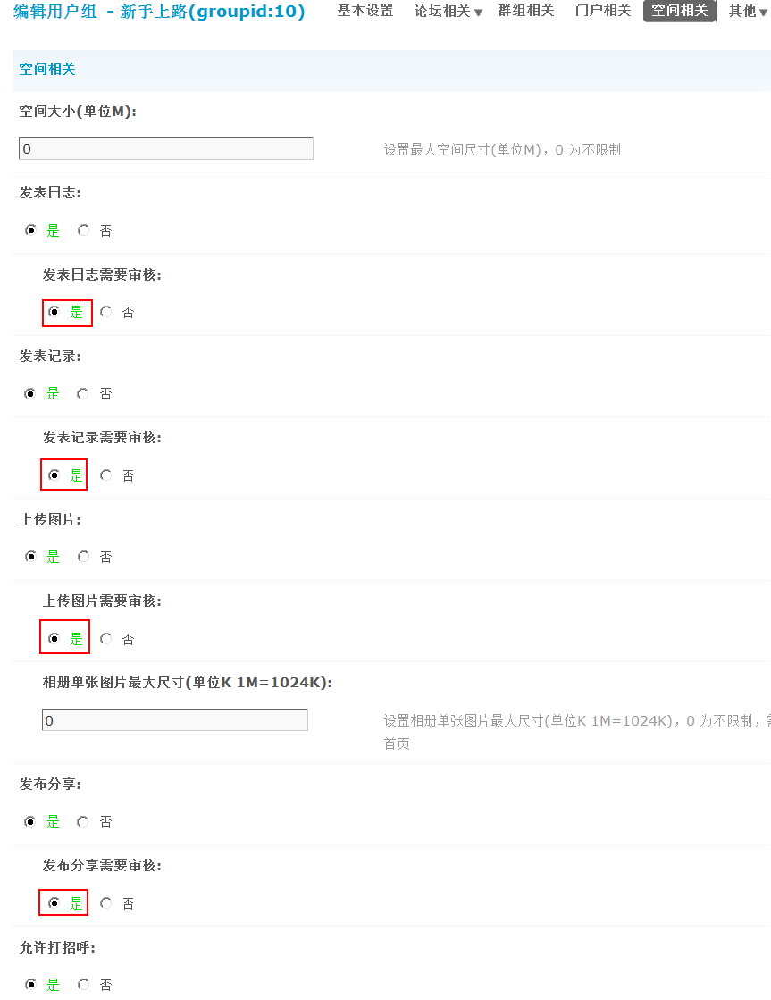当被审核的用户组会成发表日志、图片、记录、分享后，管理员可以看到要审核的具体内容，如下图所示：
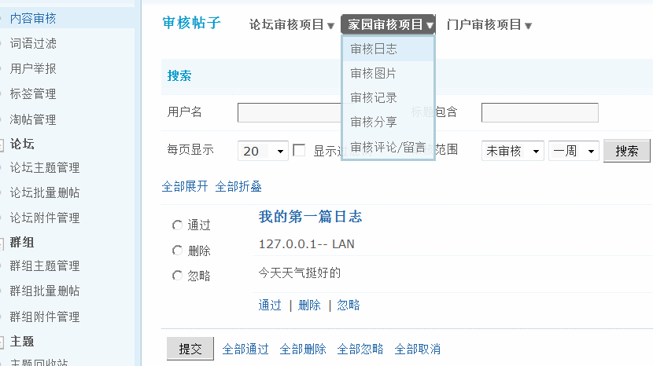审核方法同上。
注意：评论内容中如果包含后台设置的关键词是需要在后台审核通过的。
四、门户审核项目的开启
管理员进入站点【后台】=>【用户】=>【用户组】=> 点击指定用户组后的“编辑”，也可以选择多个用户组点击“批量编辑”后进入用户组权限编辑界面，然后点击【门户相关】，开启用户发表文章的权限，然后设置文章是否需要审核。
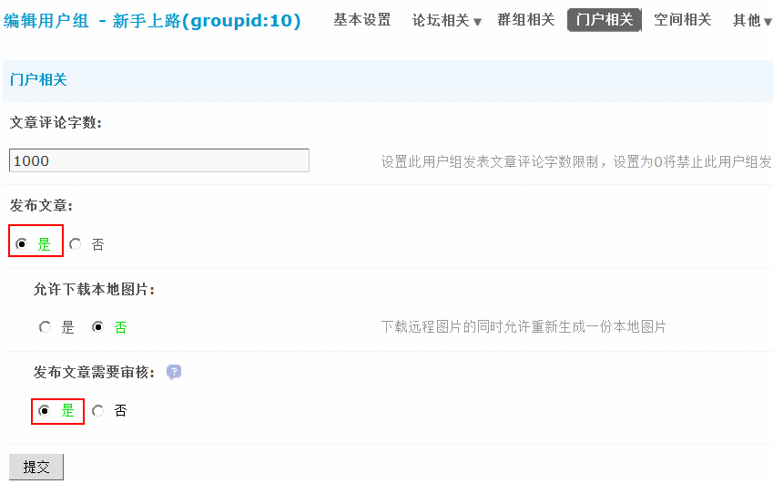当该用户组的会员发布文章时需要管理员进行审核，如下图所示：
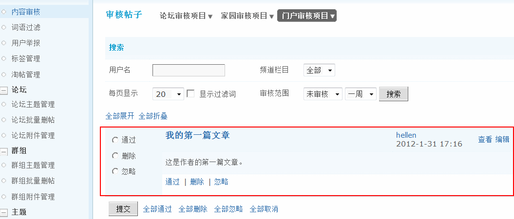审核方法同上。